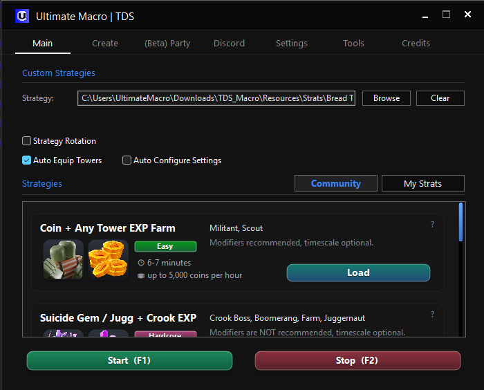

Capture the moves while you play.
Win more.
Play less.
Record and replay Tower Defense Simulator strategies on Windows. Load community strategies, automate repeat actions, and stay in control of each run.
Free & open sourceWindows · AutoHotkey v2
F1 StartF2 Pause / resumeF3 Stop

THE CORE LOOP
Record once.
Use it again.
Save a strategy as a .strat file, then replay it or load one shared by the community.
Keep your .strat or choose a community-made one.
Start a run and follow its progress.
THE PARTS THAT MATTER
The boring bits
stay out of the way.
More than a recorder: these tools help make repeat sessions practical.
Prepare the loadout
Auto Equip can prepare towers for a strategy. Verify your loadout: detection can still miss towers.
Recover between matches
Verify maps and handle match endings with Restart or Play Again when supported. Test a full run first.
Start with community strategies
Load community-made .strat files, rotate them by run or time and try the 1.5× or 2× timescale modes.
BEFORE THE FIRST RUN
Set up once.
Watch your first run.
There are only a few things to line up before the macro can read the game and follow the strategy.
01
Download the release
Get the latest ZIP and extract the complete folder somewhere easy to find.
02
Install AutoHotkey v2
Install AutoHotkey 2.0. The older 1.1 release is not supported.
03
Test a strategy
Open Main.ahk, match the settings and watch one full run before longer sessions.
THE STRATEGY RECORDER
See the actions.
Save the strategy.
This interactive example shows how recorded actions work. It does not record your actual game.
EXAMPLE RUNIllustration00:04:21
00:02SPAWN TOWERMinigunner1 · Slot 1
00:11UPGRADE TOWERMinigunner1 · Path 2
00:19CHANGE DJ TRACKDJ · Track 2
00:33USE ABILITYCommander · Call of Arms
Demo only · nothing is saved
THE READY CHECK
Give it the same screen
every time.
The macro reads what is on screen. These settings remove the small differences that make a run harder to follow.
Manual ready check
Check each item yourself. This site cannot inspect your PC or Roblox settings.
A FEW QUESTIONS
Before you
start a run.
The short version of what it does, what it needs and where to look next.
Come say hi in Discord ↗What does it actually do?
It records and replays the parts of a TDS run you would rather not do twice: placements, upgrades, selling, repositioning, target changes and abilities. It can also rotate strategies, equip towers and handle the end of a match.
How do I make a strategy?
Open Create → Record a Strategy, play the run, then save it as a .strat file. Use Strategy Lab when you need to refine it.
What happens when a match ends?
When a match ends, it can use Restart or Play Again when appropriate, verify the selected map and continue with the next run.
What should I set up first?
Use Windows 10 or 11, install AutoHotkey v2.0 and the English (US) OCR language pack, use a supported 16:9 display, keep 100% Windows scaling as the baseline and match the TDS settings in the ready check.
Can I use a community strategy?
Yes. Open the Main tab's Community view, or load a community-made .strat file with Browse.
Which download is for me?
For a ready-to-use install, download the latest ZIP from the official releases. You do not need source-code branches to get started.
Is this affiliated with Roblox?
Ultimate Macro is not affiliated with Roblox Corporation or Paradoxum Games.
THE PROJECT
Built in the open.
Shared by players.
Find the latest releases, community strategies, setup help and recorded sessions in the places the project actually lives.
Original creator · DarksenLead developer · pizzaroles24Licenses · See each release
READY WHEN YOU ARE
Ready to try
your first run?
Download the verified release, follow the setup guide and test one full match first.
ULTIMATE MACRO●
Latest releaseWindows · AutoHotkey v2.0
Open the download page ↗Free and open source · Use responsibly